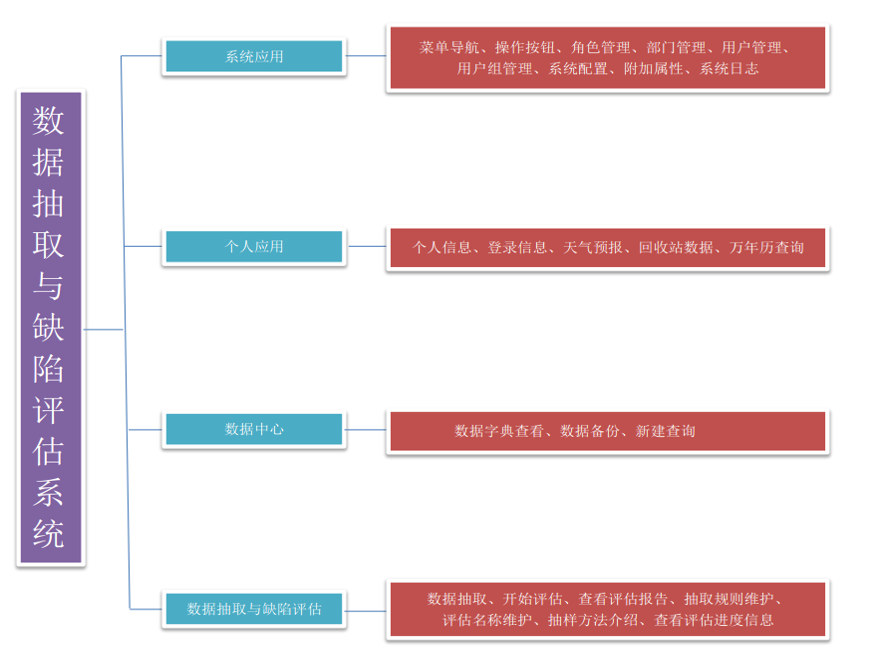

- Data Extraction and Defect Assessment System
- Financial cost comparison analysis system
- Point meal management platform
- Supermarket cash register management system
- Property integrated service platform (WeChat public platform development)
- Zhiliao Drawing board
- Zhiliao U disk and mobile hard disk write protection software

Data Extraction and Defect Assessment System
Application fields
Data center of electricity, transportation, petrochemical, telecommunications, education, transportation and logistics, manufacturing and other industries.
Research Background
With the development of computer technology, network technology, communication technology and Internet technology, as well as the automation of business processes in various industries, enterprises accumulated a large number of business data, these data are calculated with TB. These data and the resulting information is the wealth of the business, which faithfully records the state of business operations. The face of a large number of data, forcing people to constantly looking for new tools to the operation of the enterprise to explore the rules for business decision-making valuable information to enable enterprises to profit. To meet the urgent needs of enterprises is a powerful tool for data extraction. For enterprises, the data extraction must be strict quality control. Do not lose sight of the quality of your data at all times, even if you sample data from a data warehouse and do not forget to check its quality. Because data analysis is to explore the inherent law of the operation of enterprises, the original data is wrong, it is difficult to explore from the regularity. If the data from the wrong to explore out of the "regularity", and then to guide the work, it is likely to be misleading. If data is being extracted from a running system, more attention should be paid to the integrity and validity of the data.
Architecture
Choose ASP.NET as the basic development platform with excellent architecture design idea, adopt SQLServer2012 as the system database, adopt SOA application framework, in order to create the loosely coupled service based on standard and combining with business. Designed using MVC three-layers model, object-oriented design ideas to build a powerful B/S architecture integrated application platform.
Main Technology
1.
The primary key of the table in the database uses the GUID algorithm technique.
2.
AJAX partial refresh technology.
3.
SOA application framework technology.
System function module
。